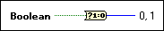
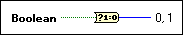

Boolean To (0,1) Function
Owning Palette: Boolean Functions
Requires: Base Development System
Converts a Boolean FALSE or TRUE value to a 16-bit integer with a value of 0 or 1, respectively.

 Add to the block diagram Add to the block diagram |
 Find on the palette Find on the palette |
Owning Palette: Boolean Functions
Requires: Base Development System
Converts a Boolean FALSE or TRUE value to a 16-bit integer with a value of 0 or 1, respectively.

| Add to the block diagram |
Find on the palette |